图标 · 黄铜指南针
r01 写成写实产品图，表盘还带数字。r02 改成粗搪瓷玩具，去掉数字。
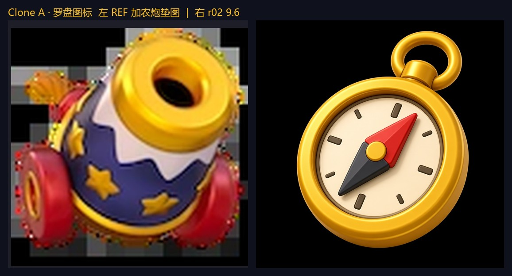
| 轮 | 风格 | 结构 | 光影 | 红线 | 新颖 | 总分 | 不足 |
|---|---|---|---|---|---|---|---|
| r01 | 1.7 | 2.4 | 1.6 | 1.1 | 1.4 | 8.2 | 偏照片级金属，表盘有数字 |
| r02 | 2.3 | 2.5 | 1.9 | 1.5 | 1.4 | 9.6 | 终稿。粗金圈、大红针、纯刻度 |
按仓库里的 /pmem-clone-image（Mode B）和 /pmem-merge-ladder（Mode C）各跑两组新题材。合格线 Absolute-5D ≥ 9.6。每张都垫了真实参考图：克隆锁画风换主体，合成梯只锁玩具 3D 介质和横排网格，不抄园艺工具。
| 组 | 技能 | 新题材 | 轮次 | 终稿 | 最低分 |
|---|---|---|---|---|---|
| A | Clone Mode B | 罗盘 / 测绘员 / Voyage 弹窗 | 图标 2 · 角色 3 · UI 1 | OK | 9.6 |
| B | Clone Mode B | 提灯 / 水手 / Eclipse 弹窗 | 图标 2 · 角色 1 · UI 1 | OK | 9.6 |
| 文具 | Merge ladder | 珊瑚橙文具 L1→L8 | 2 | OK | 9.6 |
| 乐器 | Merge ladder | 黄铜 + 海军蓝乐器 L1→L8 | 1 | OK | 9.6 |
克隆五维：风格 2.5、结构 2.5、光影材质 2.0、红线 1.5、新颖度 1.5。合成梯五维：风格胶水 2.5、升级差 2.5、图标可读 2.0、红线 1.5、爬梯 1.5。任一格低于 9.6，整组不算过。
r01 写成写实产品图，表盘还带数字。r02 改成粗搪瓷玩具，去掉数字。

| 轮 | 风格 | 结构 | 光影 | 红线 | 新颖 | 总分 | 不足 |
|---|---|---|---|---|---|---|---|
| r01 | 1.7 | 2.4 | 1.6 | 1.1 | 1.4 | 8.2 | 偏照片级金属，表盘有数字 |
| r02 | 2.3 | 2.5 | 1.9 | 1.5 | 1.4 | 9.6 | 终稿。粗金圈、大红针、纯刻度 |
r01、r02 身份对，身子比国王瘦。r03 把桶状比例锁回去，仍是两只眼、空手。
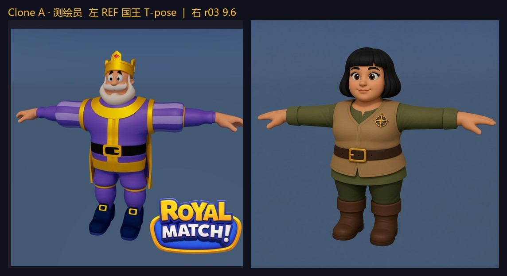
落选 r01 · 9.4
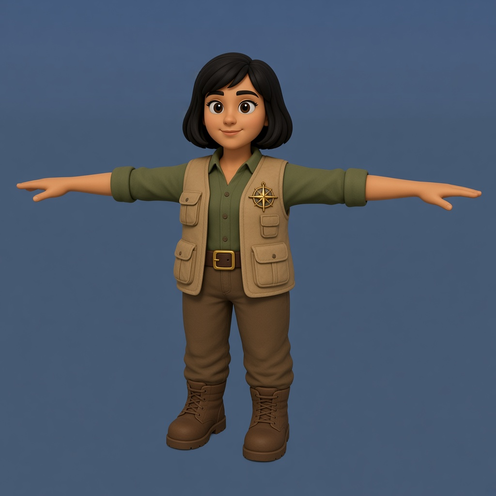
落选 r02 · 9.4
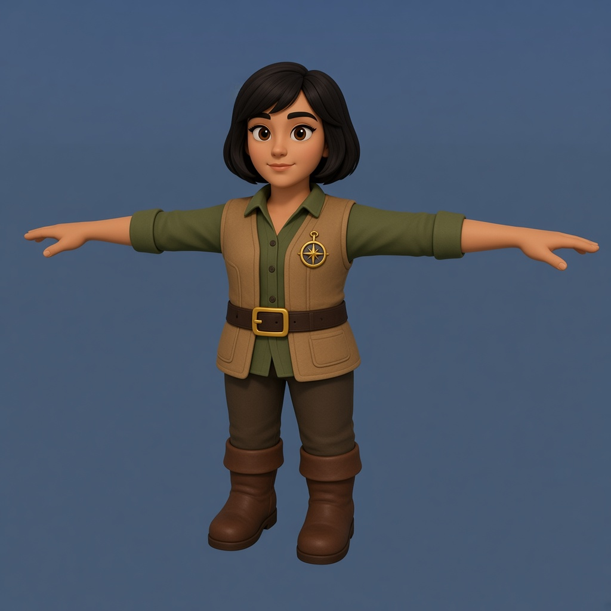
| 轮 | 风格 | 结构 | 光影 | 红线 | 新颖 | 总分 | 改点 |
|---|---|---|---|---|---|---|---|
| r01 | 2.2 | 2.4 | 1.9 | 1.5 | 1.4 | 9.4 | 腿偏长，桶状不够 |
| r02 | 2.2 | 2.4 | 1.9 | 1.5 | 1.4 | 9.4 | 胸针更清楚，比例仍瘦 |
| r03 | 2.4 | 2.4 | 1.9 | 1.5 | 1.4 | 9.6 | 终稿。大头短腿，两眼，胸针 |
外圈金边和内圈琥珀橙分开，文案和图标都换成航海，没有沿用皇冠。
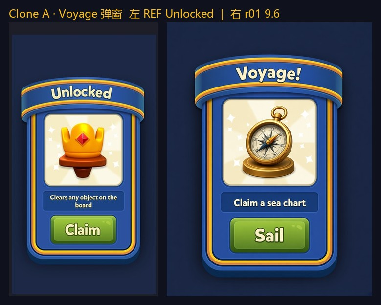
| 轮 | 风格 | 结构 | 光影 | 红线 | 新颖 | 总分 |
|---|---|---|---|---|---|---|
| r01 | 2.4 | 2.5 | 1.9 | 1.4 | 1.4 | 9.6 |
r01 灯室是实心金属。r02 改成透光琥珀玻璃，内部发光。
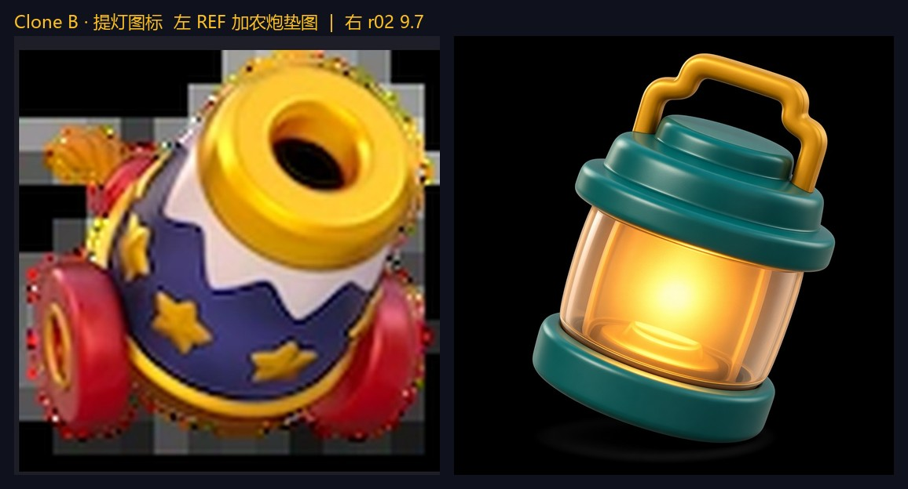
| 轮 | 风格 | 结构 | 光影 | 红线 | 新颖 | 总分 | 不足 |
|---|---|---|---|---|---|---|---|
| r01 | 1.7 | 2.0 | 1.7 | 1.5 | 1.4 | 8.3 | 灯室不透光，偏写实金属 |
| r02 | 2.4 | 2.4 | 2.0 | 1.5 | 1.4 | 9.7 | 终稿 |
两只眼、T 字站姿、没有皇冠和 logo。
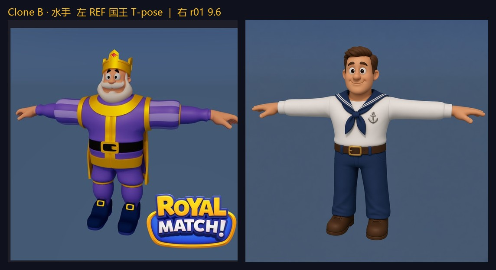
| 轮 | 风格 | 结构 | 光影 | 红线 | 新颖 | 总分 |
|---|---|---|---|---|---|---|
| r01 | 2.4 | 2.4 | 1.9 | 1.5 | 1.4 | 9.6 |
中心是望远镜，按钮是 Look。金边和琥珀内描边都在。
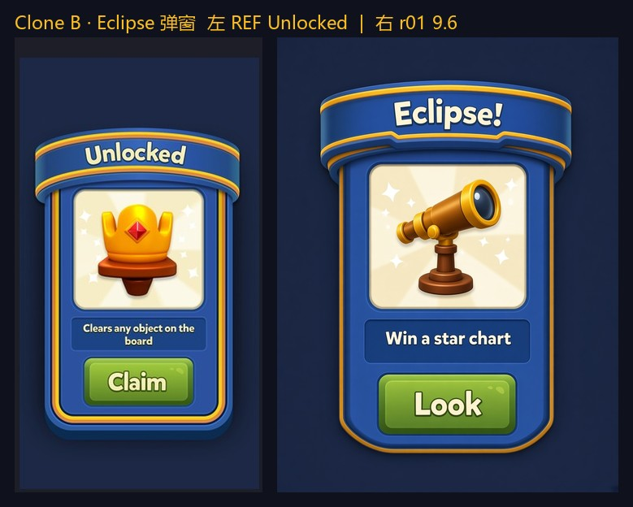
| 轮 | 风格 | 结构 | 光影 | 红线 | 新颖 | 总分 |
|---|---|---|---|---|---|---|
| r01 | 2.4 | 2.5 | 1.9 | 1.4 | 1.4 | 9.6 |
八件都在，但打孔器被画成钳子，剪影名词没过。整组作废，整张重出。
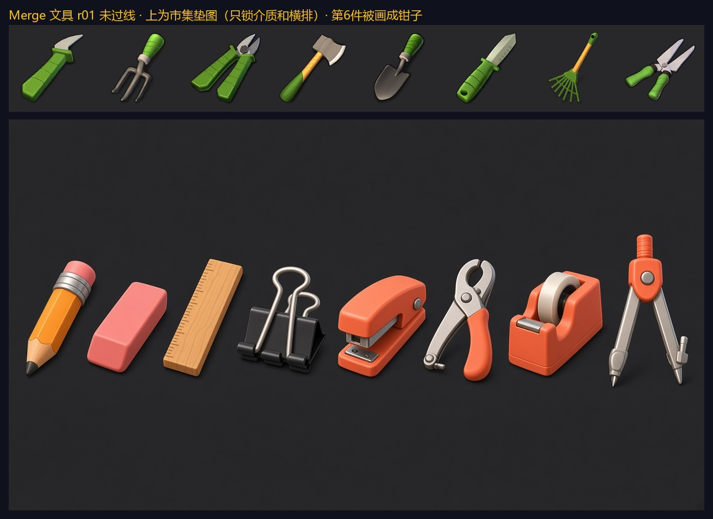
每件都有珊瑚橙零件。打孔器改成扁底座加杠杆。最右圆规零件最多。
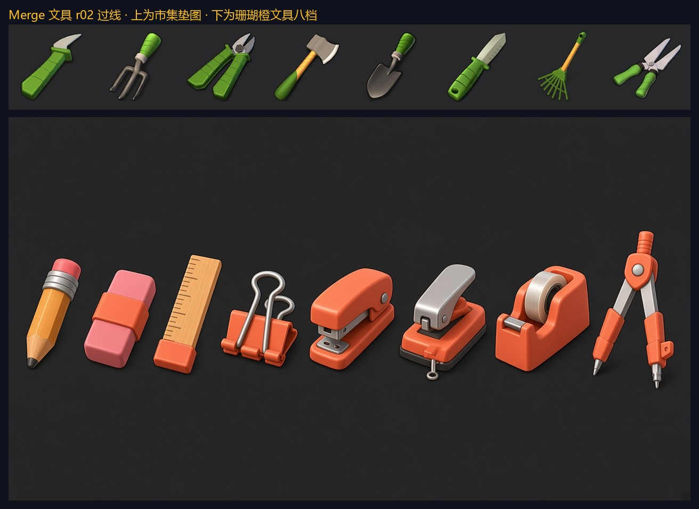
| 档 | 物件 | 胶水 | 升级 | 图标 | 红线 | 爬梯 | 总分 |
|---|---|---|---|---|---|---|---|
| L1 | 短铅笔 | 2.3 | 2.3 | 2.0 | 1.5 | 1.5 | 9.6 |
| L2 | 珊瑚箍橡皮 | 2.4 | 2.3 | 2.0 | 1.5 | 1.4 | 9.6 |
| L3 | 木尺 | 2.4 | 2.4 | 2.0 | 1.5 | 1.4 | 9.7 |
| L4 | 长尾夹 | 2.4 | 2.4 | 1.9 | 1.5 | 1.4 | 9.6 |
| L5 | 订书机 | 2.5 | 2.4 | 2.0 | 1.5 | 1.5 | 9.9 |
| L6 | 打孔器 | 2.4 | 2.4 | 1.9 | 1.5 | 1.4 | 9.6 |
| L7 | 胶带座 | 2.5 | 2.4 | 2.0 | 1.5 | 1.5 | 9.9 |
| L8 | 绘图圆规 | 2.4 | 2.5 | 2.0 | 1.5 | 1.5 | 9.9 |
八个剪影都能一眼分开。尤克里里和小提琴轮廓不同，不算同一超类重复。最右手风琴零件最多。
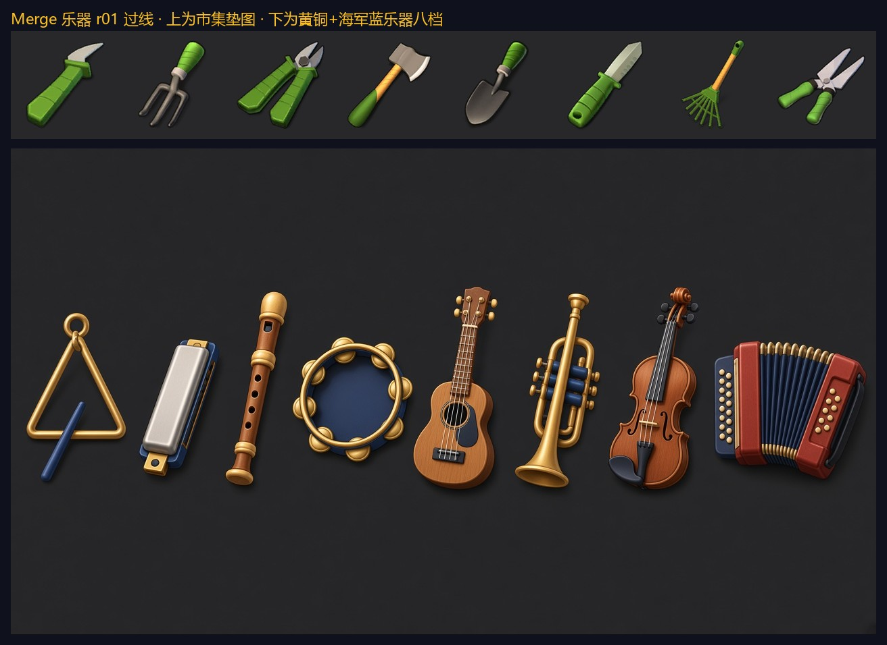
| 档 | 物件 | 胶水 | 升级 | 图标 | 红线 | 爬梯 | 总分 |
|---|---|---|---|---|---|---|---|
| L1 | 三角铁 | 2.4 | 2.3 | 2.0 | 1.5 | 1.4 | 9.6 |
| L2 | 口琴 | 2.5 | 2.3 | 2.0 | 1.5 | 1.4 | 9.7 |
| L3 | 木笛 | 2.4 | 2.3 | 2.0 | 1.5 | 1.4 | 9.6 |
| L4 | 铃鼓 | 2.5 | 2.4 | 2.0 | 1.5 | 1.5 | 9.9 |
| L5 | 尤克里里 | 2.4 | 2.4 | 2.0 | 1.5 | 1.5 | 9.8 |
| L6 | 小号 | 2.5 | 2.4 | 2.0 | 1.5 | 1.5 | 9.9 |
| L7 | 小提琴 | 2.4 | 2.4 | 2.0 | 1.5 | 1.5 | 9.8 |
| L8 | 手风琴 | 2.5 | 2.5 | 2.0 | 1.5 | 1.5 | 9.9 |
垫图裁自仓库已有对照图的左侧原图，以及 docs/showcase/skills-homepage/assets/merge/market/market_ref_sheet.jpg。本页只记录这一轮新题材，不改首页那三组烘焙 / 清洁 / 运动和卷轴 / 铁匠 / Jackpot。